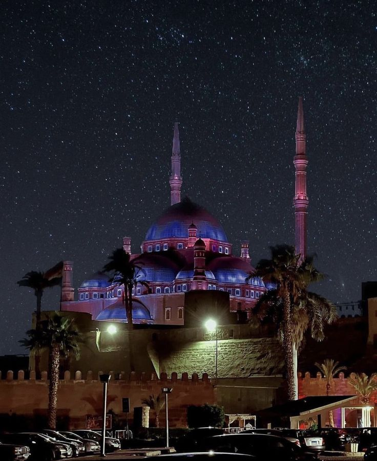
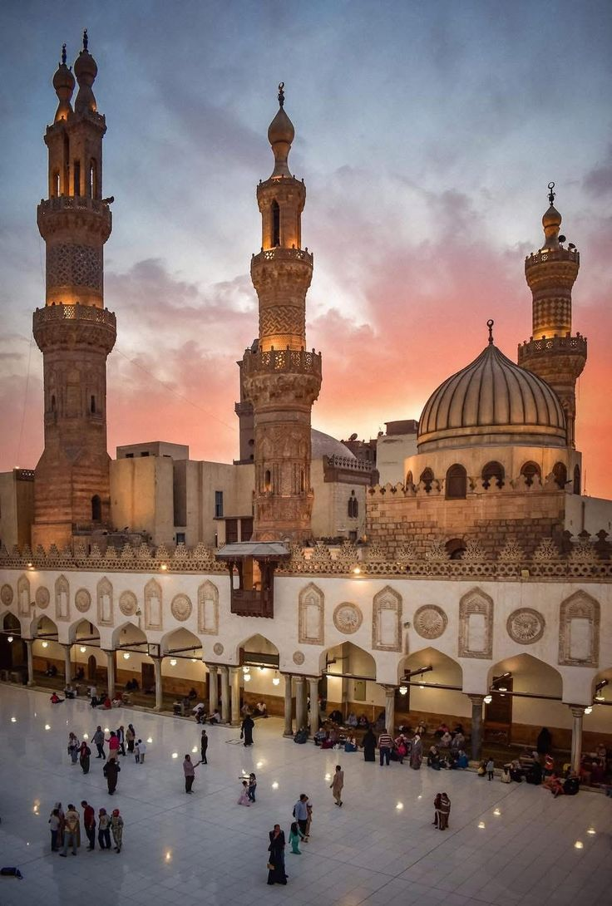
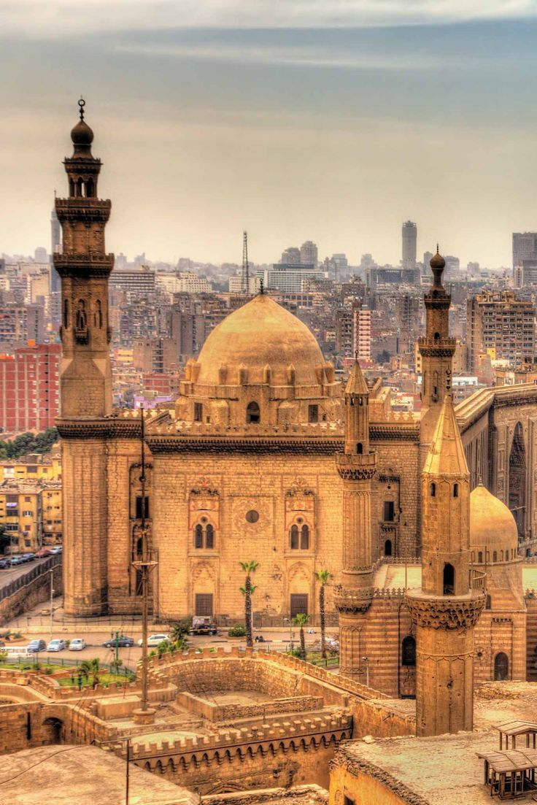
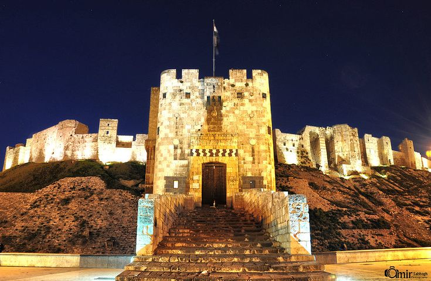

Antiquities are things left from the past, like old buildings, tools, and art. They help us understand how people lived a long time ago. Antiquities are important because they show the history and culture of different civilizations. In the Islamic era, many beautiful buildings and important works were created, which are still admired today.
Sultan Hassan Mosque
The Mosque of Sultan Hassan is a famous example of Islamic architecture in Cairo. It was built between 1356 and 1363 during the Mamluk period. The mosque is known for its large size and beautiful design, with a big courtyard and four iwans. It is located near the Citadel of Saladin and is an important historical and tourist attraction today.

Al-Azhar Mosque
Al-Azhar Mosque is one of the oldest and most important Islamic landmarks in Cairo. It was founded in 970 AD during the Fatimid era. The mosque is not only a place of worship but also a center of education linked to Al-Azhar University. It is known for its beautiful architecture and remains an important religious and cultural site today.

Muhammad Ali Mosque
The Mosque of Muhammad Ali is a famous landmark in Cairo. It was built between 1830 and 1848. The mosque is known for its Ottoman-style design, large dome, and tall minarets. Today, it is an important religious and tourist site with a beautiful view of Cairo.

The Citadel of Saladin
The Citadel of Saladin is an important historical landmark in Cairo. It was built in 1176 AD by Salah al-Din to protect the city. The citadel served as the center of government for many years and includes famous buildings like the Mosque of Muhammad Ali. Today, it is a popular tourist attraction with a great view of Cairo.
